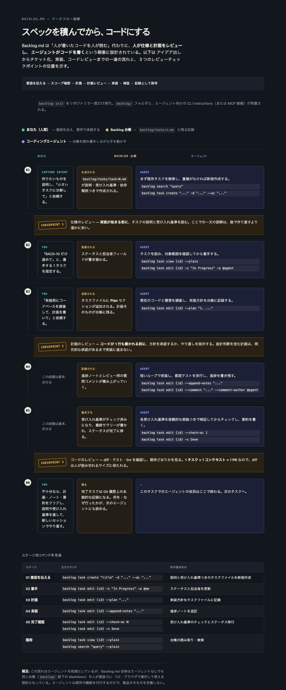

Backlog.md
概要¶
Backlog.md は、人間と AI エージェントの両方を第一級ユーザーとする Markdown ネイティブなタスク管理 CLI(npm パッケージ backlog.md)。スコープ・計画・受け入れ基準・進捗・成果を平文の Markdown ファイルとして backlog/ ディレクトリに保持し、Git 管理下に置くことで人間にもエージェントにもレビュー可能な作業記録を作る(出典: raw/articles/backlog-md-manifesto.md)。CLI が唯一の正典(canonical)であり、TUI・ブラウザ・MCP はその上に乗るビュー/アダプタという位置づけ。
設計思想(マニフェスト)¶
- 人間とエージェントの両方が第一級ユーザー: エージェントなしでも人間が作成・閲覧・修復できなければならない。自動化は前提条件にしてはならない。
- コアループ:
意図の把握 → スコープレビュー → 計画 → 計画レビュー → 実行 → 検証 → 記録の保存。タスク Markdown のセクション構成(下記)はこのループをそのまま反映する。 - 信頼の源泉は人間可読な Markdown: Git は履歴の証跡として有用だが必須ではない。内部ソースコードの API は実装詳細であり、統合面としては保証されない。
- サーフェス階層: CLI が正典 → CLI instructions が正規のエージェント向けワークフロー → TUI/ブラウザは同じセマンティクスの上のビュー → MCP はレガシーなオプションアダプタ(MCP ファースト設計は禁止)。
- シンプルさが信頼を生む: 証明されたニーズがない限り、層・エイリアス・互換レイヤーを追加しない。
(出典: raw/articles/backlog-md-manifesto.md 全体)
3つのレビューチェックポイントと運用モデル¶
README のタグライン "AI agents write the code. You review the tasks: before, during, and after." が Backlog.md の運用モデルを要約する(出典: raw/articles/backlog-md-readme-ai-workflow.md)。推奨フローは spec-driven AI development と呼ばれ、以下の3チェックポイントを軸に構成される:
- チェックポイント#1 — 仕様のレビュー: エージェントがユーザーの要望を説明・受け入れ基準つきの小さいタスクに分解した直後、実装が始まる前に読む。
- チェックポイント#2 — 計画のレビュー: エージェントが現在のコードベースを調査して
--planに書いた実装方針を、コードが1行も書かれる前に承認する。 - チェックポイント#3 — コードのレビュー: 「1タスク = 1コンテキストウィンドウ = 1PR」の原則で diff を人が読み切れるサイズに保ち、実装後にテスト・lint・期待どおりの結果かを確認する。
出力が不十分なら plan/notes/final summary をクリアし、タスクの説明や受け入れ基準を直したうえで新しいセッションでやり直す(既存タスクを直接修復させない)。完了タスクはGit履歴上に「何を・なぜ試みたか」の永続的な記録として残る。
この一連の流れは「あなた(人間)/ Backlog台帳(backlog/tasks/*.md)/ エージェント」という3アクターのやり取りとして整理できる。人とエージェントは直接会話するだけでなく、必ず台帳(Markdownファイル)を経由して意図・計画・進捗をやり取りする(これは「一つのモデルを人とエージェントで共有する」というマニフェストの設計原則そのもの)。

(上図は本節の内容を可視化したページ添付図。ページ資産として wiki/entities/assets/backlog-md-workflow-diagram.png に配置。ingest済みraw sourceではないため出典台帳には含めない)
ステージ別に整理すると:
| ステージ | あなた(人間) | Backlog 台帳 | エージェント |
|---|---|---|---|
| 01 意図を伝える | アイデアを説明し、タスクへの分解を依頼 | backlog/tasks/task-N.md を説明・受け入れ基準つきで新規作成 |
backlog search "query" → backlog task create "..." -d "..." --ac "..." |
| ▸ チェックポイント#1 | 仕様のレビュー(説明・受け入れ基準を読む) | ||
| 02 着手 | 着手する1タスクを指定(例:「BACK-10だけ進めて」) | ステータス・担当者フィールドを更新 | backlog task view {id} --plain → backlog task edit {id} -s "In Progress" -a @me |
| 03 計画 | 実装前の調査・計画作成を依頼 | タスクファイルに Plan セクションを追記 | backlog task edit {id} --plan "1. ..." |
| ▸ チェックポイント#2 | 計画のレビュー(コードを書く前に承認/差し戻し) | ||
| 04 実装 | 基本は任せる | Notes・レビュー用コメントが蓄積 | 実装→テスト→backlog task edit {id} --append-notes "..."/--comment "..." |
| 05 完了確認 | 基本は任せる | AC がチェック済みになり Done へ | backlog task edit {id} --check-ac N → backlog task edit {id} -s Done |
| ▸ チェックポイント#3 | コードのレビュー(diff・テスト・lintを確認) | ||
| 06 記録として保存 | 不十分なら plan/notes/summary をクリアし、説明・ACを直して新セッションで再実行 | 完了タスクが Git 履歴上の永続的な記録として残る | このタスクでの役目はここで終了、次のタスクへ |
「backlogの内容をエージェントに渡してそのまま実行させる」という運用について: task-execution ガイド(下記CLIワークフロー参照)が定めるとおり、「既存タスクを読み、実装計画を立て、コードを書く」というエージェント主導の実行そのものは明確に想定された使い方である。一方で、人間のレビューを介さない無条件の全自動実行はモデルの中心ではない。マニフェストの設計原則4「Review before consequence」、および Boundaries節の「Backlog.md is not ... an agent-only orchestration system」が明言する通り、意味のある設計判断を含む計画は明示的な承認を待ってから実装に進むことが CLI instructions 上のルールになっている(task-execution.md: "If the plan contains a material product, architecture, or workflow decision ... present it and wait for explicit approval before implementation")。ルーティンでスコープ内の軽微な変更はチェックポイントを省略してよいが、それは例外であって既定ではない。
タスク Markdown の形式¶
タスクは backlog/tasks/<ID> - <タイトルのkebab-case>.md というフラットなファイルとして保存される。実例(BACK-547)から確認できる構造(出典: raw/articles/backlog-md-task-example.md):
---
id: BACK-547
title: Make TUI live refresh resilient to atomic writes
status: Done
assignee: [...]
created_date: '2026-07-14 19:59'
updated_date: '2026-07-14 22:03'
labels: []
dependencies: []
references: [...]
modified_files: [...]
priority: high
type: bug
ordinal: 194000
---
## Description
<!-- SECTION:DESCRIPTION:BEGIN --> ... <!-- SECTION:DESCRIPTION:END -->
## Acceptance Criteria
<!-- AC:BEGIN -->
- [x] #1 ...
<!-- AC:END -->
## Definition of Done
<!-- DOD:BEGIN --> ... <!-- DOD:END -->
## Implementation Plan
<!-- SECTION:PLAN:BEGIN --> ... <!-- SECTION:PLAN:END -->
## Implementation Notes
<!-- SECTION:NOTES:BEGIN --> ... <!-- SECTION:NOTES:END -->
## Final Summary
<!-- SECTION:FINAL_SUMMARY:BEGIN --> ... <!-- SECTION:FINAL_SUMMARY:END -->
ポイント:
- YAML frontmatter:
id/status/assignee/dependencies/references/modified_files/priority/type/ordinalなどのメタデータ。ordinalは表示順を決める数値で、人間可読な ID(BACK-547)とは別軸。 <!-- SECTION:xxx:BEGIN/END -->コメントマーカー: 各セクション本文を CLI が機械的に検出・書き換えるための境界。これにより CLI は正規表現的にセクションを安全に差し替えられる。直接編集は非推奨(CLI ガイドが明示的に禁止)。<!-- AC:BEGIN/END -->/<!-- DOD:BEGIN/END -->: チェックボックスは#1,#2... と番号付けされ、backlog task edit --check-ac 1のように番号で状態を操作する。- セクションはコアループのフェーズに対応: Description/Acceptance Criteria(作成時)→ Implementation Plan(実行前)→ Implementation Notes(実行中)→ Final Summary(完了時)。
backlog init で作られるディレクトリ構造¶
backlog init "<Project Name>" --defaults を実行すると、リポジトリルートに以下が作られる(出典: raw/articles/backlog-md-init-and-task-create.md、v1.48.0 で実地検証):
<repo root>/
├── AGENTS.md # エージェント向け指示書(backlog instructions overview の実行を強制)
└── backlog/
├── config.yml # プロジェクト設定(task_prefix, statuses, date_format 等)
├── tasks/ # アクティブなタスク(作成〜完了直後まではここ)
├── drafts/ # ドラフト(まだ確定していない下書きタスク)
├── docs/ # ドキュメント
├── decisions/ # 決定記録(ADR相当)
├── milestones/ # マイルストーン
├── completed/ # 完了後、定期クリーンアップで移動されたタスクの置き場
└── archive/
├── tasks/ # 明示的にアーカイブしたタスク
├── drafts/
└── milestones/
tasks/ と completed/ は別物である点に注意: Done になったタスクは即座に移動せず、しばらく tasks/ に残り、定期クリーンアップ(一定期間経過後)で completed/ に移される(出典: raw/articles/backlog-md-cli-instructions.md の task-finalization ガイド「Tasks in the terminal status stay there until periodic cleanup moves them to completed. Do not archive completed work.」)。archive/ は「もうやらないと決めた」タスク/ドラフト/マイルストーンをしまう、completed/ とは異なる概念。
config.yml の主なフィールド: project_name, default_status, statuses(配列), task_prefix(ID接頭辞、プロジェクト名から自動決定), date_format, remote_operations 等。
backlog task create で新規ファイルが backlog/tasks/ 直下に作られる際、--ac フラグをカンマ区切り文字列で複数条件のつもりで渡しても分割されず1項目になる(検証済みの落とし穴)。複数条件は --ac "条件1" --ac "条件2" のようにフラグを繰り返す必要がある。
CLI ワークフロー(instructions)¶
Backlog.md は「CLI instructions が正規のエージェント向けワークフロー」という原則のもと、backlog instructions <name> で4段階のガイドを提供する(出典: raw/articles/backlog-md-cli-instructions.md):
- overview — 「計画や意思決定が要るか」でタスク化の要否を判断させ、検索優先(
backlog search,backlog task list --status ...)を指示。 - task-creation — 既存タスクの検索 → スコープ判断(1PRで収まるか)→ サブタスク/依存タスクの選択 → 将来作業には実装計画を書かせない(計画は着手時に現在のコードベースを調査して記録する、というのが明示ルール)。
- task-execution — 着手前に
-s <active status> -a @nameでステータス/担当を更新 → 現在のシステムを調査 → 計画を--planで記録 → 実装は短いループ(実装→テスト→--append-notes)。 - task-finalization — 客観的な検証証拠(テスト・コマンド出力・手動確認)なしに受け入れ基準をチェックしない →
--check-ac/--check-dod→--final-summary→ 終端ステータスへ変更。フォローアップタスクはユーザー承認なしに作らない。
一貫する原則: Backlog の Markdown ファイルを直接編集せず、必ず CLI コマンド経由で操作する(メタデータ・ファイル名・関連性・履歴の整合性を保つため)。
自然言語呼びかけ→CLIコマンド実行の起動メカニズム(実地検証)¶
人間が自然言語で話しかけるだけでエージェントが backlog CLI を実行し始めるのは、Claude Code 固有の「ルール」機能や hooks によるプログラム的な強制ではない。実体はプレーンな Markdown 文への慣習の乗っかりである(出典: raw/articles/backlog-md-agent-instructions-mechanism.md、src/agent-instructions.ts の実装確認):
backlog init実行時、src/agent-instructions.tsのaddAgentInstructions()がCLI_AGENT_NUDGE(src/guidelines/cli-agent-nudge.mdの内容、<CRITICAL_INSTRUCTION>タグで囲われた「毎リクエストの前にbacklog instructions overviewを実行せよ」という指示文)をCLAUDE.md/AGENTS.md/GEMINI.md/.github/copilot-instructions.mdの4ファイルに同一内容で挿入する。- 挿入は
<!-- BACKLOG.MD GUIDELINES START/END -->というマーカーコメントで囲い、backlog.md-instructions-version行でバージョンを記録することで、再実行時に冪等に上書きできるようにしている(stripGuidelineSection→ 再挿入)。MCP接続を選んだ場合はensureMcpGuidelines()が同様の仕組みで別マーカー("MCP GUIDELINES")のナッジ文を挿入する。 - enforcement の実体はここまで: これらのファイルへの書き込み以外に、ツール呼び出しを強制する hooks やゲート処理は Backlog.md 自身のコードには存在しない。効いているのは、Claude Code・Codex・Gemini CLI・GitHub Copilot などのコーディングエージェント側がもともと持つ「プロジェクトルートの
CLAUDE.md/AGENTS.md/GEMINI.md/copilot-instructions.mdを起動時に自動でシステムコンテキストへ読み込む」という各エージェント側の規約であり、Backlog.md はそこに指示文を書き込んでいるだけ。指示への追従はエージェント(LLM)のプロンプト追従性に完全に依存し、プログラム的な保証はない。 - 実地検証として、Backlog.md 自身のリポジトリの
.claude/settings.json(hooks設定)と.mcp.jsonを確認したが、いずれも hooks/MCP 強制設定は存在しなかった(空 or 未設置)。.claude/agents/project-manager-backlog.mdはinstallClaudeAgent()が設置する Claude Code の subagent 定義であり、これも「呼べば使えるエージェント定義」であって強制フックではない。
出典¶
raw/articles/backlog-md-manifesto.md— 製品哲学、第一級ユーザー、コアループ、サーフェス階層、境界。raw/articles/backlog-md-task-example.md— タスク Markdown の実例(BACK-547、frontmatter・セクションマーカー・AC番号付けの実物)。raw/articles/backlog-md-cli-instructions.md—backlog instructionsの4ガイド全文(overview/task-creation/task-execution/task-finalization)。raw/articles/backlog-md-init-and-task-create.md—backlog init/backlog task createの実地検証ログ(ディレクトリツリー・config.yml・生成ファイル・落とし穴)。raw/articles/backlog-md-readme-ai-workflow.md— README.md の「AI agents write the code. You review the tasks」タグラインと、3レビューチェックポイント・spec-driven AI development フローの全文。raw/articles/backlog-md-agent-instructions-mechanism.md—src/agent-instructions.ts/src/guidelines/cli-agent-nudge.md/src/guidelines/index.tsの全文と、Backlog.md 自身のリポジトリに hooks/MCP強制設定が存在しないことのローカル実地検証。
wiki/entities/assets/backlog-md-workflow-diagram.png は「3つのレビューチェックポイントと運用モデル」節を可視化したページ添付図(ingest済みの一次資料ではないため上記の出典一覧には含めない)。